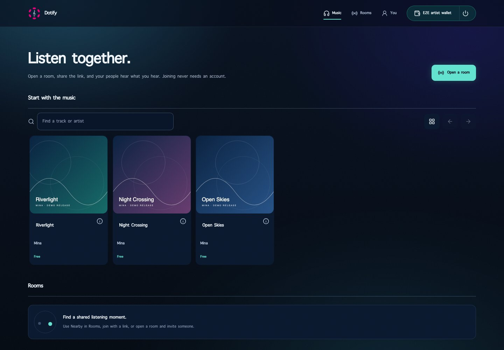
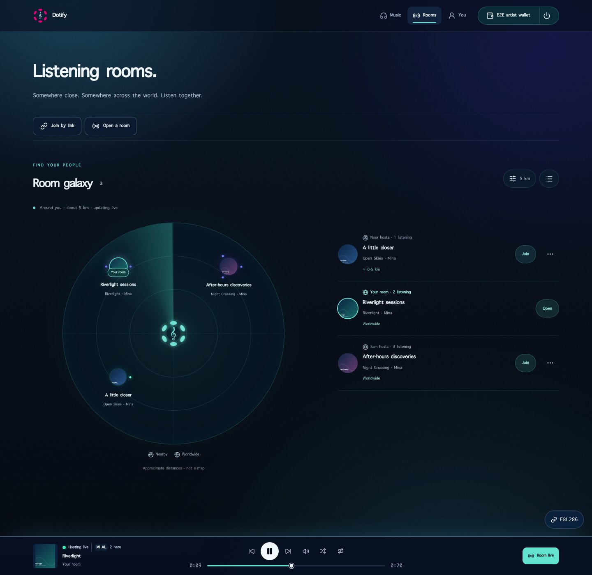
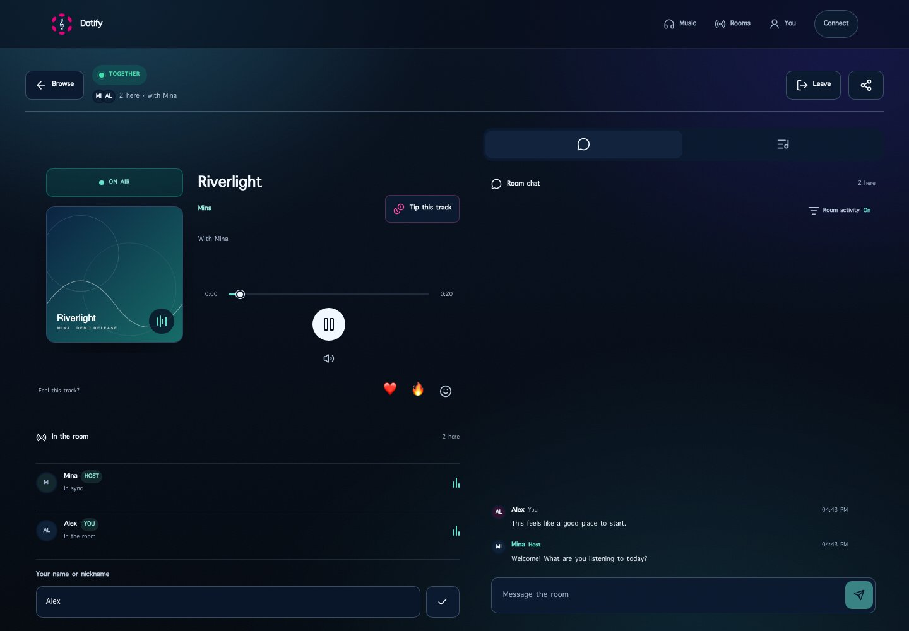
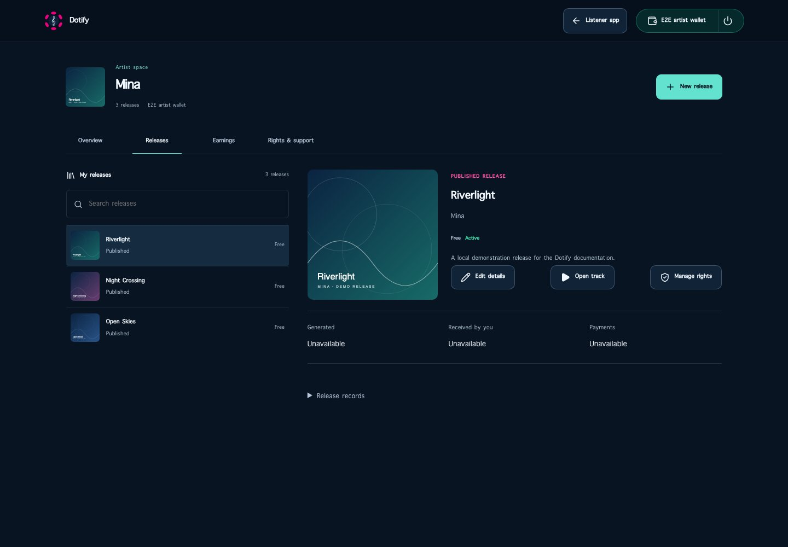

A signal commons for music
Let the music connect the dots
Dotify turns a simple link into a shared listening moment, while artist-owned runtimes keep access, rights, and value under the artist's control.
A production-readiness project on Polkadot's Paseo testnet.
Inside Dotify
Find the music. Meet the people.
The current Web interface, captured with local demonstration data. Rooms, people and counts below are illustrative, not live activity.




See the room and artist studio


The social core
One link. One moment. No ceremony.
The room is not a feature beside the player. It is the place where listening becomes relation and discovery happens through another person. A compact mobile player now stays with the conversation, with Chat, Queue and People within reach. Queue brings the host's lineup and listener requests together. A compact live conversation lets listeners catch up at their own pace; reactions stay beside the music across room tabs. Text drafts remain until the room confirms acceptance, and reduced-motion listening keeps the same feedback without animated reactions. A room usability follow-up reserves track requests for guests, keeps host curation in Up next, and groups message actions behind a discreet control with a touch reply shortcut. An illustrated user guide and structured release credits are proposed next; they are not yet published features.
-
Open a room
The host chooses a track and opens a temporary listening space around it.
-
Share the threshold
The room link resolves its real host, track, and presence context before entry.
-
Listen together
A guest chooses a local room name and joins the WebRTC stream without wallet or key access.
Artist sovereignty
The platform should never swallow the artist.
Shared listening matters only if the people who make the music remain in control of how it circulates.
- Catalog
-
A runtime that belongs to the artist
Dotify's active contract model gives each artist a personal SmartRuntime instead of placing every catalog decision inside one platform-owned contract. A cacheable backend read model makes discovery fast while those runtimes remain the source of truth.
- Access
-
Doors the artist can define
Free and paid Classic access are explicit product policies. Classic support records wallet access without promising perpetual media availability. Human-free access remains future work until real, privacy-respecting Proof of Personhood is integrated.
- Value
-
Rights and splits that can be audited
Runtime rules keep royalties, collaborator shares, and access decisions inspectable without making chain mechanics the listener's first experience. Classic payments now move through an explicit native runtime intent, while Product CASH remains a separate settlement rail until the cross-chain receipt model is verified. Recipient transfers are gas-bounded: failed recipient shares stay claimable in the runtime instead of blocking the listener's access. The artist review step names the controller, support amount, split recipients, and catalog read-back before any publication signature. Payment receipts, NFT ownership, runtime ownership, and royalty beneficiaries remain distinct facts.
- Circulation
-
Presence without source-file distribution
Explore live rooms through a navigable sky, then enter one in a click. A room guest hears the host's temporary media stream while protected source references and content keys stay outside public room state.
Invisible trust
Infrastructure belongs in the guarantee.
Wallet signatures, encrypted delivery, WebRTC boundaries, and on-chain policy do real work behind the experience. They should make listening safer, not more bureaucratic.
- Individual play
- The backend verifies the signed request, resolves the canonical release, confirms the target runtime state, selects the retained content-key version named by the encrypted audio ref, and checks access before temporary key delivery.
- Protected room
- Access is checked against the host. Room guests receive the ephemeral WebRTC stream, never the protected source file or content key.
- Publication
- The active Paseo factory uses the owner-only registry facet; artist runtime creation and release publication are enabled on the audited deployment.
Production before spectacle
The calm surface needs a strong spine.
-
Delivered in the repository
Core access, upload, room, and test paths
Server-side uploads and key delivery, wallet-signed access requests, hosted signaling, capacity-aware room links, browser-local room quality evidence, a confirmed-event catalog read model, versioned content-key custody with synthetic recovery rehearsal, and deterministic critical-flow tests form the current production spine.
-
Current gate
Prove one candidate from support to shared sound
The implementation sequence through the responsive interface, Product adapter, artist support, room resilience, and optional galaxy is merged. W13 is now the single pilot gate. The
[0, 1, 29]Product CDM validation build was republished through the verifiedpad0.16.7 DotNS profile. Candidate-bound payment, full key release, a hosted room heard by a walletless guest, and one physical iPhone listening check are recorded. The distinct defaultviemrelease is also published. Physical first-sound coverage, forced-TURN behavior across independent networks and the consented pilot remain. A temporary rollback/restore preserved paid access and audible playback on one Product Desktop account; a lasting rollback still needs matching manifest metadata. DAV2 and responsive-cover changes will follow measured failures rather than speculative rewrites. -
Product DevNet and the public web
One musical experience, across supported hosts
Dotify now has a publishable
dotify-test01.dotbuild, explicit app-scoped Product identity, public room links that preserve wallet-free entry, typed runtime ports around the current viem implementation, API-side Product sr25519 verification with frontend Product proof submission for protected key/session requests, and an opt-in CDM/PAPI path that can route runtime reads and write submissions through the Product host signer. The Product CDM access path now reads the connected chain's native precision and converts only the nativeRevive.callvalue, preserving the 18-decimal Solidity price while preventing accidental overpayment requests. Ordinary Web uses viem, while the tracked Product release explicitly usesproduct-cdmon DevNet. Product writes fail closed on Product public-key / pallet-revive H160 mismatch, poll post-payment access read-back before success, preserve transaction receipts when verification fails, and expose runtime royalty claims through the shared writer port. Product payment hashes now open as native Paseo Asset Hub extrinsics instead of dead EVM explorer links. Claimable balances remain readable, while complete cross-device Product settlement history still needs nativeRevive.ContractEmittedindexing. Product gift/tip confirmation reads native events from a bounded, read-only API archive and verifies the exact finalized transaction block; the Ethereum log index does not expose native calls, and the host bridge cannot read historical receipts directly. Interrupted support can be checked again without another payment. Native gifts and work tips have dedicated dated receipts, direct artist-chosen allocations and optional room-host sharing from the whole tip before the remainder follows the work's rights split. Activation requires owner-approved runtime upgrades and Product device validation; campaign references identify contributions without certifying charitable impact. The explicit Product support build waits for native payment finalization. A Product Web CDM transaction now has host-signed evidence. Desktop signing and CDM-installed runtime packages still need validation before considering CDM as default; CASH remains disabled until settlement proof is tied to Dotify access. A Product DevNet journey harness now pins the static platform gates and accepts live CDM/room evidence exports, so missing Product-host proof stays visible instead of being inferred from a web build. Passkey-only wallet routes are retired for the pilot: guests still enter with no wallet, standalone paid/publish actions use an EVM wallet, and Product-host actions use the app-scoped Product account where supported. Product Mobile in-app live audio remains pending a host-exposed WebRTC capability.The September 2026 Product DevNet reset is now explicit in the codebase: new app publications use the refreshed Bulletin/DotNS tooling, Dotify's Product CDM registry points at the current DevNet registry, and the Bulletin descriptor is pinned to the post-reset runtime. The merged
[0, 1, 29]Product CDM validation profile was observed in Product Web and Desktop after publication through the host-facingpad0.16.7 DotNS profile. Its CID isbafybeihawlfqhqgipiwg2dj5iamchz22e3d6z6t7t5snc4iv3333bdavom. Product Web recorded a native payment, access read-back, and full protected-audio key release; Product Desktop hosted a room heard by a walletless browser guest. The separate defaultviempilot release is published at CIDbafybeihe4oty4sdifkbajty76kgj5gasvoqqpv5bnssmg65mcdhduqwpkm. This is release and validation evidence, not an accepted aggregate pilot or a successful Desktop-signed payment.Product
[0, 1, 60]is published from clean packagingcb63d0749aba0a43980f1d3dd3f52a3c9866cf66at CIDbafybeia2dhkny3yv4oy2dzubqa24qlt2kacnd64sy5mjf3qw47dhdveuum. SDK 0.39 / TrUAPI 0.25 matches the inspected Desktop 0.1.4-rc.3 protocol. Finalized DotNS and all 127 public-content blocks match the signed build. This Product-only publication retains the current artist runtimes and does not redeploy the API, signaling or ordinary Web. See publication evidence. The streaming-reset rollout records the non-root services, private encoder and preserved custody. Physical Desktop/mobile connection, signing, audio, location and native value-flow acceptance remain open. Historical pre-reset clients are not a compatible standalone rollback. W13 still requires a consented aggregate pilot and an evidence-backed go/no-go decision.Product DevNet is a first-class delivery target alongside ordinary mobile and desktop web. The next pilot must demonstrate discovery, listening, artist support, and clear receipts on the supported hosts, with device limitations stated honestly. The W13 pilot gate now has an explicit release-readiness package: dependency evidence, Product/CDM smoke inputs, rollback rehearsal, aggregate consented pilot metrics, and a go/no-go record stay separate from any claim that a community has already shipped.
The current internal test starts with fresh artist runtimes and an empty catalog, using one authenticated streaming format. Artists republish their masters; compatibility with retired test audio is removed under ADR 0033. The matching API, private encoder and Web/Product cutover deployed on 2026-10-22; real-publication and physical-device acceptance remain open. Streaming acceptance also checks continuity after a network interruption, reopening a track, and protected listening without repeated sign-in prompts. Protected listening requires reusable sessions; a session-service outage does not switch to signatures per track. The current stability follow-up adds a bounded API cache for registered encrypted media to reduce public-gateway failures. A prepared CDN integration adds edge-first delivery and bounded warming of confirmed new publications, using the existing dedicated gateway rather than adding a storage authority. The cache sees only ciphertext; artist access remains separate. Activation and three-region first-sound acceptance are still pending because the supplied gateway rejects the current content. An isolated Bulletin storage study explores reducing pinning-provider dependence while preserving encrypted segments. Directory retrieval, physical-device playback and storage renewal must be proven before any replacement is activated. The cache holds ciphertext only and leaves access and keys outside it. A temporary discovery refresh failure retains only an already-valid invitation, while expiry and opt-out still remove it. Entry asks clearly for a name or nickname without repeating an already-selected room code. Product 0.1.54 published this stability follow-up from merged #302, including bounded presence-driven planet size and light. API and signaling were deployed first; prolonged listening and installed Host capability still require physical validation. Audio and session regression evidence distinguishes local browser tests from the remaining physical-device and room checks. Release 0.1.46 adds one reusable sign-in for artists who explicitly announce a room visit and reliable chat delivery while the Product polling transport is busy. It restores native Product payments through an explicit CDM release profile after 0.1.45 requested an EVM wallet. Publication and public artifact integrity are verified; installed-device validation remains pending.
-
Nearby listening, with a living sky as an option
Find a room. Validate the Product host path.
Music discovery opens directly on one horizontal catalog, with title-and-artist search, a complete grid, and an in-memory return to your place. Cards lead with artwork, title and artist. A centered Play appears on hover or keyboard focus; touch browsing uses native horizontal rails without persistent arrows. The playback layer keeps media stable between listening and the artist studio. The mini-player can be closed to stop listening; active-room exits ask whether to leave or close the room. Leaving returns home. These navigation refinements are under validation before publication. The player stays out of the way until a listener chooses music, and complete listening terms remain available when opening a release, before any paid confirmation. A shared Polkadot account name can label the connection and prefill an editable room name. Room links and active sessions lead room discovery, with code entry available as a secondary path. Connection problems stay visible when action is needed; technical status and infrastructure explanations stay out of the normal listening path. Artist pages lead with releases and real sessions, while personal access-payment records keep entitlements distinct from voluntary contributions. Returning to an active room preserves the current role and listening session. Inside a room, a compact writing mode keeps the player and composer together while the visible viewport adapts to the keyboard. Published Product 0.1.56 extends that visible-screen behavior to room names, support sheets and artist forms, with quiet controls, readable fields and reduced-motion-aware sheet transitions. Physical keyboard validation remains a separate release gate. The full player and room retain the timeline and playback modes on small screens. The mobile solo player has its own return control, with previous/play/next above secondary queue, repeat and local sound controls. A labeled track tip stays beside the artist attribution rather than competing with playback; the artist name opens the profile, where personal gifts remain a separate action. Release information and sharing open contextually, keeping technical records out of the main listening surface. The artist publication flow now separates the track story from structured release facts, including project, date, genres, languages and contributor roles. The resulting release sheet leads with artwork, story and credits; access, price and recipients remain runtime-derived, while technical references stay folded away. This metadata revision targets the next development-data reset rather than attempting to interpret earlier free-text descriptions. Recent listening reflects actual playback and can be cleared; release chronology is shown only when available. The artist workspace separates Overview, Releases, Earnings and Rights & support, while gifts remain distinct from listening access. The artist dashboard leads with the artist's received share, separates listening payments, gifts and tips, and shows real dated activity and per-release value. Verified native support receipts are saved by the API for cross-device history; earlier unsynced native payments may be absent. The next room-life increment adds live release-matched rooms to the artist Overview and lets artists choose an ordinary visit or an explicitly announced, registry-verified welcome. Counts describe connected sessions, not historical or unique-human listens. Room conversation gains temporary typing indicators, discreet activity, replies, mentions and a host-pinned message, with no notification sound or additional wallet signature for an already connected artist. Generated totals include all recipients, while received and claimable amounts remain distinct. Visible-page refreshes retain the last complete reading on failure; unavailable history is not presented as zero income. Artwork and searchable works lead the workspace, with transaction proofs available on demand. This revision still requires release validation in Product. These audit-completion changes are review work, not evidence of a deployed Product candidate. While browsing, the live mini-player follows the host's track and returns to the room; physical iPhone validation remains part of release acceptance. Next and Previous prepare a bounded amount of encrypted audio while the current track plays, and remain available during loading so a listener can change direction. Access checks still apply when opening a release; real-device transition timing remains part of the pilot evidence. The room surface now keeps one interaction language across phones and desktop browsers: discover real open rooms, see host, track, and presence context, then join from a touch-safe sheet or a desktop detail rail. The host can shape an ephemeral Up next list that everyone in the room can see; track endings advance through it, while Previous follows what was actually heard. The lineup carries only public display metadata and every selection still passes through the host's access policy without an automatic payment. Rooms now start as link/code-only invitations: opening a room does not advertise it to everyone. Global room lists and Statement Store announcements are disconnected so they cannot bypass the host's choice. Socket.IO remains authoritative for capacity, playback, and joining. W27 introduces a typed room transport boundary and opt-in Celerity presence and encrypted social-event observation, disabled by default. Celerity and Statement Store are the same protocol; paired capture tooling records bounded delivery observations and clock uncertainty, but real Product measurements remain required before any event class moves away from Socket.IO. Anonymous room-link entry remains an invariant, private messages require application encryption with membership-bound ephemeral keys, and WebRTC remains the audio path. Published discovery includes a room galaxy and accessible room list; graphics never imply exact location and never prevent joining. The room galaxy uses a lightweight radar with artwork and orbiting listeners; an accessible list shows the same rooms. Product-host compatibility remains awaiting real host smoke evidence before Dotify treats it as delivered. Building on the Product 0.1.50 test release, W19 includes Nearby by default in new Web and Product builds: find opted-in live rooms around you, or make your own room visible within a chosen approximate radius in kilometres. Compact Join by link and Open a room controls stay within reach; temporary sheets hold search and visibility settings. One choice, available when creating the room and inside it, decides who can find it: Link only by default, Nearby, or Everyone. Host visibility and listener search are separate choices; precise coordinates stay on the device, and sparse results offer explicit search widening. The published 0.1.55 release retains a slider from 5 to 42 km, in one-kilometre steps, respecting both participants' areas. Hosts who choose Everyone are told that their name and track become visible to anyone on Dotify; those public invitations appear without requesting a listener's location, and can be hidden or reported. The published radar starts foreground discovery automatically at app entry through the device permission gate. Nearby and worldwide invitations appear independently as they arrive, so a slow location fix never blocks inspection or joining. Nearby cards show approximate five-kilometre distance bands; worldwide rooms show their worldwide scope without inventing a distance. The galaxy is illustrative, not a map. City exploration is removed. Product rechecks its Location permission gate before each foreground fix; denial stops automatic retries and physical Host prompt/revocation behavior still needs verification. Location work stops in the background, and host publication remains an explicit choice. The published radar uses circular album covers, exact connected-session counts and orbiting presence around each room, with a clear marker for your own room and the real Dotify logo in cyan neon at the radar's centre. Room labels show the title and artist; hover or keyboard focus reveals the details, also available by touch. Product 0.1.54 introduced bounded cover growth and brighter halos as more sessions join, keeping smaller rooms visible. A host's visibility choice survives temporary interruptions. Published Product 0.1.55 pushes scoped room changes, keeps a connected background host visible at its last shared area, and briefly marks a lost connection before withdrawing it. Optional room names and invitations remain stable when tracks change. A visible verified seal identifies a room where the current artist has announced their presence; Hide is reversible. Installed Desktop/mobile background and audio behavior still require physical acceptance, as recorded in the rollout evidence. A verified artist can see aggregate activity across rooms carrying their music and visit publicly discoverable rooms from anywhere. Private rooms contribute only to totals and expose no invitation, identity or location. These are current sessions, not historical or verified unique listeners. W19 builds on W18's amended privacy contract, with room-link alternatives, expiry and no wallet-location binding. It does not depend on 3D or a new payment rail. Publication still requires privacy, supported-device and room-reliability evidence. Artist-controlled feature updates and recoverable keys are scoped follow-ups; stablecoin feasibility is deferred, and JAM remains an infrastructure watch item. These are planned capabilities, not features enabled in the current release. Radar and List share the same consented discovery results. Room previews put the name and invitation first, followed by host, music and presence. The optional 3D renderer is retired; an immersive galaxy remains a future exploration.
-
Product 0.1.67 adds recoverable publication progress and explicit retries, preserving the current artist catalog. The deployment record separates verified delivery from the remaining real-device publication checks.
Product 0.1.66 introduced bounded release metadata and royalty recipients, and catalogs are read in pages. Contracts, services, Web and Product now use the same fresh runtime generation. Artists retain control of their runtimes; these limits keep shared discovery and payment processing predictable.
The internal test catalog has been reset: artists must recreate their space and publish their releases again. Registration, publication, listening and payments still require acceptance on real Product mobile and desktop devices. See the 0.1.66 deployment record and remaining checks.
Trusted pilot and streaming
Open Dotify to a small trusted circle, then make listening continuous.
The streaming publication path is implemented for new uploads, with encrypted AAC segments and preserved masters. The internal reset now uses that single authenticated streaming format, without migrating retired recordings. Upload jobs and player integration are deployed; native and measured acceptance remain open.
The hosted-service hardening is deployed: client limits account for the hosting proxy, playback no longer broadcasts room lists globally, and sign-in and catalog state survive redeploys. API non-root execution and safe volume ownership were verified in the October 22 cutover. Durable artist jobs, a private encoder and authenticated current-format player/room playback are deployed; real-publication and physical-device acceptance remain separate gates. A trusted pilot of at most 42 people remains subject to device, listening and payment acceptance. The remaining streaming work aims at first sound within a second: faster delivery of the deployed streaming renditions with unchanged encryption/access, encrypted media served through a cache that cannot read it, short-lived access prepared ahead for signed-in listeners, and gapless playback with system controls. W35 continuous listening is published in Product 0.1.63 with authorized prepared transitions, adaptive quality, system controls and an explicit local resume offer. The Product 0.1.64 update adds bounded mobile audio startup and usable Play/Pause during loading. Physical background and audible-continuity checks remain release gates. The W34 access preparation implementation is merged and deployed on the API, Web and Product 0.1.62, with verified public artifact identity. Physical first-sound evidence remains separate. W36 shared API state adds PostgreSQL-backed replay protection, sign-out, upload budgets and an elected catalog writer, with independent renewable sessions. Public API replicas keep one private publication-custody service for encrypted jobs and verified receipts. The October 28 test deployment now runs two warm API replicas and one private custody after a verified storage migration, with shared-session, rolling-restart and custody-outage checks. Physical acceptance remains separate; artist access policy and room signaling are unchanged. The first-sound audit distinguishes availability from startup speed: whole-rendition compatibility can delay mobile startup. The managed mobile reader now starts from early authenticated segments on supporting engines, without another hosting service. It is published in Product 0.1.65; physical Product cold-start measurements remain open. W37 catalog resilience bounds chain reads, saves completed catch-up ranges and reuses release indexes. The local 1,000-artist/10,000-release fixture checks concurrency and recovery; the deployed small catalog is fresh, while large-scale provider capacity remains a separate validation step. Room guests still join from a link and never receive a key. Sub-second first sound is a measurement target, not a claim about the current release. Room scaling research evaluates shared room recovery and a host-stream relay for larger gatherings. It is isolated from the deployed app: no extra hosting service, region or audience limit is enabled. Physical room continuity remains a pilot gate. An isolated Bulletin media prototype has verified encrypted-block storage, selective reads, interrupted-publication recovery and immediate renewal on DevNet. A generated real-AAC canary confirms node readback but exposes a native Host retrieval compatibility blocker. A three-block addressing comparison now verifies native BLAKE2b reads while identical SHA-256 bytes time out; BLAKE2b AAC playback now completes an eight-second generated clip in Desktop. Controlled cold audible-start evidence remains open. An opt-in bounded publication pipeline overlaps direct writes with explicit transaction sequence numbers and durable recovery. A separate generated-only mobile diagnostic is published with local report recovery and verified artifact readback. The owner reports two complete native mobile listens and two successful bundled decoder controls, all with sound heard. The controls use embedded data and do not measure Bulletin delivery over Wi-Fi or 5G. A known-cache performance comparison and longer listening remain open. The 64-second continuity diagnostic is now published independently as lab 0.2.0, with verified data/records, bounded reports and manual network markers. Native mobile and its paired embedded control both complete 64 seconds with sound heard, but both have an owner-reported cut near 46 seconds. Uninterrupted listening is not accepted. The lab-only finalization comparison is now published independently as lab 0.3.0, reusing existing audio with verified artifact/record readback. It adds source/buffer observations and a human cut marker; ordinary playback is unchanged. The paired physical iPhone controls both record two human cut markers despite delayed finalization; the reproduced redundant-append bookkeeping correction is now published independently as lab 0.3.1, with retained-audio reuse and verified artifact/record readback. The corrected physical iPhone listens each show 16 unique appends, with owner-confirmed uninterrupted audio for the embedded control, native Wi-Fi playback and a native listen during a reported Wi-Fi-to-5G switch. Cache state is unknown; these bounded observations do not establish uncached network recovery or general device reliability. Cold audible startup and production retention remain separate validation gates. Live throughput and production storage activation remain separate gates; the deployed storage path is unchanged.
-
Selected experience work
Make the first listen, rooms, support, and the artist studio feel self-evident.
The September interface sequence now gives the first listening screen, room entry, solo player, support prompt, and artist workspace one clearer hierarchy. Its shared visual contract defines the type roles, color semantics, icons, live states, responsive boundaries, and accessibility checks that keep those surfaces coherent as Dotify evolves. Mobile rooms retain the desktop palette and track-driven light, with controls arranged for the smaller screen. The delivered October clarity pass gives each gesture a single word, leads the home screen with live rooms when people are listening, shows a short access cue on each track, names who receives an unlock payment, and puts leaving a room one tap away. When a listener has access but a track cannot start, the player now names the reason and retries in place; the key is still released only after the server confirms access. That behavior and the sign-in step that follows a purposeful connection still need validation with real wallets. French localization remains later, after the pilot. This polish does not replace the Product, physical-device, room, payment, and rollback evidence required by the W13 pilot gate. Read the visual-system contract or review the audit and W21–W26 ordering.
-
Deferred cultural expansion
Subscription, ambassadors, and awards wait behind trust
Staking-based subscription, ambassador rewards, community music awards, and richer social memory stay behind the production spine. They become candidates only after first sound is reliable, real Humanity / Individuality is privacy-reviewed, and provenance, consent, payment, and anti-abuse boundaries are documented.
A shared link is the front door. Artist sovereignty is the foundation.
Dotify is not a Spotify clone. It is a cultural social hub where music can reopen a commons between people without dispossessing the artist.
Read the north starExplore the project
Product direction, implementation boundaries, and current delivery status live in the repository.
- Documentation mapFind a guide for listening, development or release operation.
- Shared Score experience Clean-sheet UI direction, journeys, real capability boundaries, and delivery rules.
- Architecture overview How the frontend, API, signaling, storage, and runtimes fit together.
- Production backlog Delivered scope, active gates, and deliberately deferred capabilities.
- Product DevNet architecture What the Product host adapts now, what remains on Fly, and how runtime ports prepare CDM/PAPI.
- Product SDK roadmap The delivered Product baseline and the remaining CDM, signature, presence, and Humanity work.
- Project presentation The downloadable Dotify showcase deck as PDF.